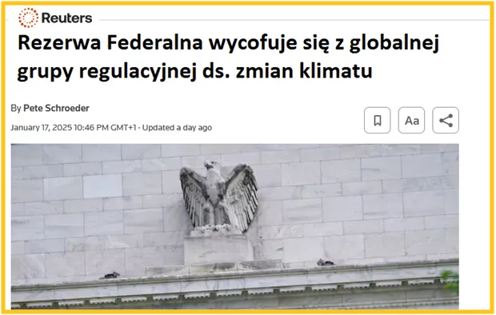

Rezerwa Federalna i inne banki wycofuje się z globalnej grupy regulacyjnej ds. zmian klimatu.
"....ponieważ jej coraz bardziej rozszerzany zakres wykraczał poza ustawowy mandat Fed."
Republikanie zaczęli na poziomie senatu odpytywać szefów największych funduszy powierniczych o sens inwestowania kapitału akcjonariuszy w zielone technologie, które są mniej opłacalne. Jest to najzwyklej działanie na szkodę spółki i udziałowców, al jest to karalne.
Al Capone z powodu braku innych dowodów został skazany za źle wypełniony PIT, każdy sposób na leszcza jest dobry.
"WASZYNGTON, 17 stycznia (Reuters) - Rezerwa Federalna USA ogłosiła w piątek, że wycofała się z globalnej organizacji banków centralnych i organów regulacyjnych, której celem jest badanie sposobów kontrolowania ryzyka klimatycznego w systemie finansowym. W oświadczeniu Rezerwa Federalna poinformowała, że wycofuje się z Sieci Banków Centralnych i Nadzorców ds. Ekologii Systemu Finansowego (NGFS), ponieważ jej coraz bardziej rozszerzany zakres wykraczał poza ustawowy mandat Fed. Bank centralny dołączył do grupy w 2020 r. Wycofanie nastąpiło trzy dni przed objęciem urzędu przez prezydenta elekta Donalda Trumpa, który krytycznie odnosi się do wysiłków rządów na rzecz określania polityki dotyczącej zmian klimatu.
...
Rzecznik grupy nie odpowiedział natychmiast na prośbę o komentarz. W ostatnich latach Fed podjął pewne kroki w celu zintegrowania zmian klimatycznych ze swoją pracą poprzez wstępne analizy i raporty, ale przewodniczący Jerome Powell wielokrotnie podkreślał, że Fed ma ograniczoną rolę do odegrania. Powell utrzymywał, że Fed nie jest odpowiedzialny za ustalanie polityki klimatycznej, a sprawa leży w rękach Kongresu..."